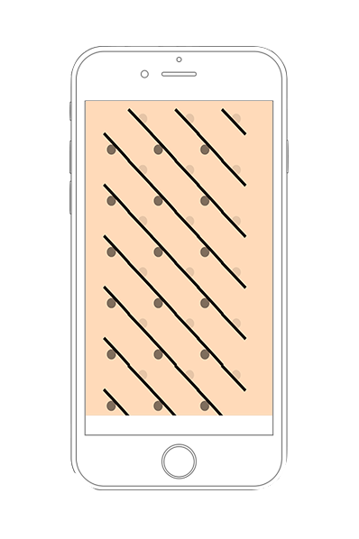
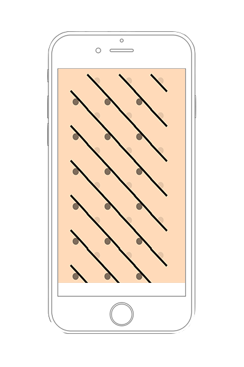

PATTERN
PATTERN is a website that allows you to discover and build pattern through your interactions with the page. The page is designed to work on devices.
(Don’t forget to unlock your screen before playing!)
 

1. Tilt the device to rotate the shapes.
(every tap on the circle changes its color)
2. When the shapes match, indication shows up.


3. Rotate the device to change into different shapes!


4. shake the phone to go back to the default shapes.
MICROSCOPE
MICROSCOPE is a website which imitates microscope experience mainly for children to explore.
1. Open the lenses to start exploring.
2. Adjust the focus to see clearer.
3. Choose from any of the dishes above.
4. Zoom in to discover more details!
SOUND LAB
SOUND LAB is a collection of sounds that form up memories. The website focuses on two senses experience: hearing and vision. Each circle represents a different sound
1. Hover each circle to listen the sound.
2. When indicated, click the circle to a new page.

3. Scroll to play the footage. this part only focuses on vision.
4. There are signs to implicate the timeline.
LOADING
LOADING is a website tends to document user’s interactions with the page during the “loading time”. Like most of the websites, this loading bar is also a fake one.
The website is built with Cookies and works on localhost(only?).
1. An intro page with no purpose other than making things seem "real".
2. Page “loading” while the undercover documenting takes place.
3. Nothing is loaded but your movements during the waiting time!
IPANEMA
IPANEMA provides a transformed reading experience of The Girl from Ipanema 1963/1982 by 村上春樹 (Haruki Murakami). The story is linked by memories which are represented as different symbols here.
1. The song appears, recalling hence starts.

2. Different memory part shows up, each one is linked to the next one through symbol.